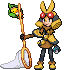

벌레 타입 포켓몬 마니아
© 2025 Chani von Karpa. PokéRogue 원본 이미지를 변경 없이 사용했습니다. 파일 이름만 변경했습니다.

CC BY-NC-SA 4.0 — 저작자 표시, 비영리, 동일조건변경허락. 라이선스 전문 · 원본의 이용 조건 표기
이 고지는 해당 이미지에 관한 것입니다. 다른 이미지나 캐릭터, 애플리케이션 전체에 같은 이용 허락이 있다는 뜻은 아닙니다.
© 2025 Chani von Karpa. PokéRogue 원본 이미지를 변경 없이 사용했습니다. 파일 이름만 변경했습니다.
CC BY-NC-SA 4.0 — 저작자 표시, 비영리, 동일조건변경허락. 라이선스 전문 · 원본의 이용 조건 표기
이 고지는 해당 이미지에 관한 것입니다. 다른 이미지나 캐릭터, 애플리케이션 전체에 같은 이용 허락이 있다는 뜻은 아닙니다.추가 메가·트레이너 원본 자산의 출처, 파일 경로, 해시와 개별 이용 조건 — 고정 원본 fb8ccb6d0703ffe48cdf80a8102d5ed943c82dba.